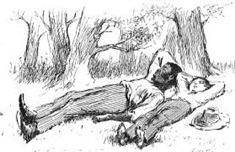
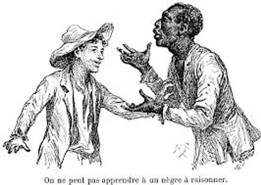

Jim and James on the Big Muddy

Jim is a black slave from Mark Twain's novel, Adventures of Huckleberry Finn, 1885. James is the same character from Percival Everett's 2024 novel, James. The 139 years between the books have seen a struggle of black Americans to throw off the injuries of chattel slavery in the USA until 1863. Then, for the first time, they were recognised in federal law as genuine human beings. They were no longer property to be bought and sold. However, their white fellow Americans have never finished digesting the change in law. White supremacy still festers under other names.
Huckleberry Finn is set before the Civil War. Slavery was legal in some U.S. states and illegal in others. The adventure of Twain's Jim consists of avoiding capture in a slave state while trying to rejoin his wife and child who reside in one. Jim is aided in his effort by the boy, Huck, who is white but a social outcast and victim of a vicious father. Jim and Huck become fast friends and fellow runaways.
The irony of Huck's mindset pervades Twain's novel. Society has taught him that racism is virtue, a divine precept that must be respected. Helping Jim to evade it makes Huck feel guilty. Yet his humanity and love for Jim leads him to break the law to aid his friend. He does so believing that it will send him to hell for eternity.
Huckleberry Finn is one of the great American novels. It's a thoughtful adventure tale written by a humorist. Many of Twain's comic effects are obtained by playing on the ignorance, superstition and dialect speech of black slaves. James of 2024 is Percival Everett's attempt to present these butts of Twain in another light. Jim, not Huck, retells the novel's story. Everett is no humorist but a grim-minded satirist. He depicts the life of unremitting pain endured by Jim and other slaves, something Twain only suggested.
Seeing slaves as full human beings, Everett understands that the supposed black subhumans have a psychic defence against their white, supposed superiors. James is also an adventure tale, but one concerned with the only fightback available to the powerless. Listen to Jim, on the way to becoming James, teach the children of slaves how to use their dialect as a mask. He says never to make eye contact and never speak first. Never signify, that is, never address any subject straight on. If your owner's house is on fire, don't shout, 'Fire, fire,' which is too direct. Say, 'Lawdy, missum! Looky dere!'. We must let the whites be the ones who discover events. They need to know everything first and give it a name. Mumble sometimes so they can have the satisfaction of telling you not to mumble.
Twain carefully renders black dialect. But Everett only lays it on when whites are listening. It's part of blacks giving whites what they wish to hear, the uncouthness that makes it right to enslave them. When Everett's black characters speak among themselves, their language is clear and direct. Twain's Jim hadn't the occasional grad-school discourse of Everett's Jim whose sophistication his author explains by an exceptional self-education.
Everett's approach is typified by his treatment of the joke Twain's Huck plays on his Jim. He makes the sleepy black believe that a series of startling events was only a dream. Jim, naive and foggy-minded, believes him. The hoax has a cruel flavour. Everett, on the contrary, has his Jim explain the situation. Love for Huck has made Jim pretend to be hoodwinked to give the boy the satisfaction of having pulled off the joke.
James follows Twain's plot to begin with. But Everett soon finds that what he wants to say takes him beyond it. He will stay with Twain's characters but adapt them to his purpose, adding new developments. Some matters of no concern in Twain's day are repugnant to blacks today. Whites acting in blackface is one of these. Everett's Jim turns out to have a superb tenor voice. On the run, he's hired by a Minstrel troupe of white men who entertain by making up as blacks and singing mock black songs on stage. The troupe is not so racist as slave owners. Its leader finds that slavery gets in the way of business. However, he's not ready to stand up against the "peculiar institution" in an effective way. Jim finds himself trapped in another servitude, this one with capitalist rules and a modern CEO. Chattel slavery has become bonded slavery.
Everett, the 21st-Century satirist, continues to veer away from Twain and the 19th-Century humorist's novel. The final pages of James explode in a departure from the original. Jim, in a coup-de-theatre, is revealed to be Huck's biological father, the boy issuing from a youthful intrigue with a white woman. This violent twist would have left the word-fountain Twain speechless. It meant miscegenation, sex between a white and a black, a North American word for a North American crime. The last U.S. state to repeal its laws against interracial marriage was Alabama in 2000.
Miscegenation is not the only word born from white supremacy. Nigger so horrified the dainty-minded that it has become unsayable and replaced with a blush by the ridiculous concoction, the N-word. This would have astonished Twain whose Adventures of Huckleberry Finn uses nigger two-hundred and nineteen times. It was part of the vocabulary of the people he wrote about, both white and black. Everett, for the same reason, can't avoid the word. He has Huck say to Jim at a crucial moment, "I guess I don't understand niggers."
Ella Fitzgerald recorded Organ Grinder Swing in 1936. Children were surprised that in the counting-out rhyme that everyone knew, nigger had been replaced by monkey:
Now eenie meenie minie moe
Catch that monkey by the toe
If he hollers, let him go
Eenie meenie minie moe
Black writer Langston Hughes explained in 1940:
"The word nigger to colored people of high and low degree is like a red rag to a bull. Used rightly or wrongly, ironically or seriously, of necessity for the sake of realism, or impishly for the sake of comedy, it doesn't matter. Negroes do not like it in any book or play whatsoever, be the book or play ever so sympathetic in its treatment of the basic problems of the race. Even though the book or play is written by a Negro, they do not like it…The word nigger, you see, sums up for us who are colored all the bitter years of insult and struggle in America."
Fifty more years brought other views. Colored and Negro that Hughes used were no longer acceptable to black Americans and even the word black had objectors. Jesse Jackson insisted in 1988 that his people preferred to be called African American. "It puts us in our proper historical context."
Today, one African-American writer has refused to bury nigger. David Bradley wrote Eulogy for Nigger* in 2007. He decries the desire of blacks for white respectability and the liberal pretence to strike a blow against racism by changing a choice of words. Let's say nigger, says Bradley, and do something concrete to alleviate black inequality. Let's change the law, not our vocabulary. By outlawing a word, on the assumption it offends, we are colluding in the very wrong we want to put right, "the glossing-over of prejudice, and the denial of a distinct American 'Nigger' experience."
On its publication in 1885, The Adventures of Huckleberry Finn had been badly received by the cultural establishment. The Transcript, a Boston newspaper, was typical in summing the novel up as:
"…[R]ough, coarse, inelegant, dealing with a series of experiences not elevating, the whole book being more suited to the slums than to intelligent, respectable people."
It didn't help that Twain poked fun at American bible-thumping and that most of their fellow countrymen met by Huck and Jim on their river odyssey were self-serving hypocrites.
As the years passed, even the fragile black establishment, in the manner of Langston Hughes, took a dislike of the book. It recalled their painful pre-Civil War status. But with desegregation of the schools in the 1950s, a new problem arose. White and black students would now sit in the same classroom together and study a masterpiece that printed the N-word two-hundred-nineteen times. Absurd solutions were offered to save the young people's discomfort. One replaced nigger with two-hundred-nineteen repetitions of the word slave. Others used servant or folks. David Bradley was for dropping the fig leaf and letting rip with what Twain wrote:
"…[T]he protests tend to focus on the use of the word nigger—which is appropriate both in terms of Twain's artistic sensibility and his intentions. What I think underlies the protests, however, is shame. Americans are, not unreasonably, ashamed that there ever was chattel slavery in this country, and have employed all kinds of repressive strategies to deny its nature and continuing effects."
And:
"My response, as a black American male, is call me what you will…but take one or two of the chains off, because they are rotten Heavy."

Bradley believes Twain's novel should be taught undiluted. As a teacher, he begins his classes by having the students say nigger aloud six or seven times. Then they open the book. Confrontation with the dread word he calls a teaching moment, a time for discussion that gets students involved. The historical context is established by reading short relevant texts from other authors. Such an approach can lead to fixing attention not on one word but where it belongs, on the substance of Adventures of Huckleberry Finn.
What Ernest Hemingway said in 1935 has been much quoted:
"All modern American literature comes from one book by Mark Twain called Huckleberry Finn. It's the best book we've had. All American writing comes from that. There was nothing before. There has been nothing as good since."
The stylist Hemingway was fascinated by Twain's loose and graceful prose mix of the vernacular and the literary. But that's only one of the book's beauties. It's unequaled in capturing the essential American experience of flight and embodying it in the flow of a great river. There's "no home like a raft," says Huck. His countrymen know no greater exhilaration than to pull up stakes and move on.
* * * * *
*David Bradley's essay, Eulogy for Nigger, was republished by Notting Hill Editions in 2015 and is available online.
**Percival Everett's novel, Erasure, 2001, was made into a movie called American Fiction in 2023. It's a story—a satire—of a black writer whose novels are too sophisticated to be popular. For a joke, he writes a novel under another name, repeating all the clichés that white readers like to believe about blacks. He finally has a bestseller.